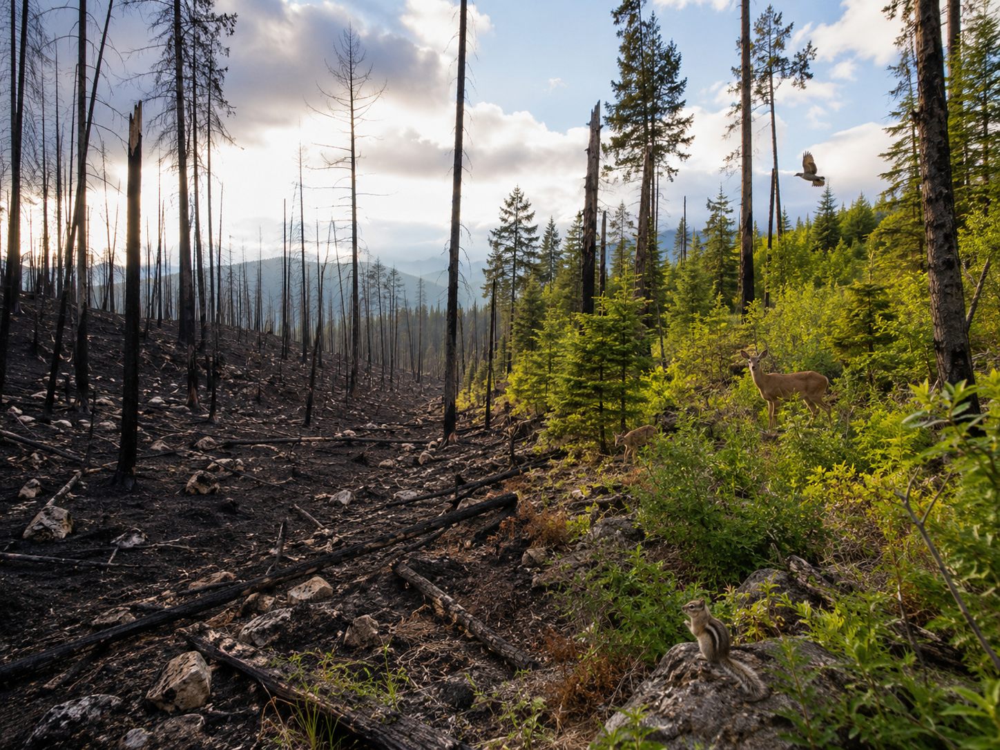
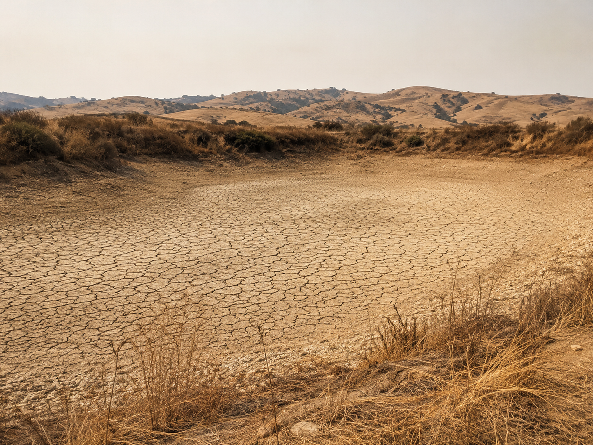
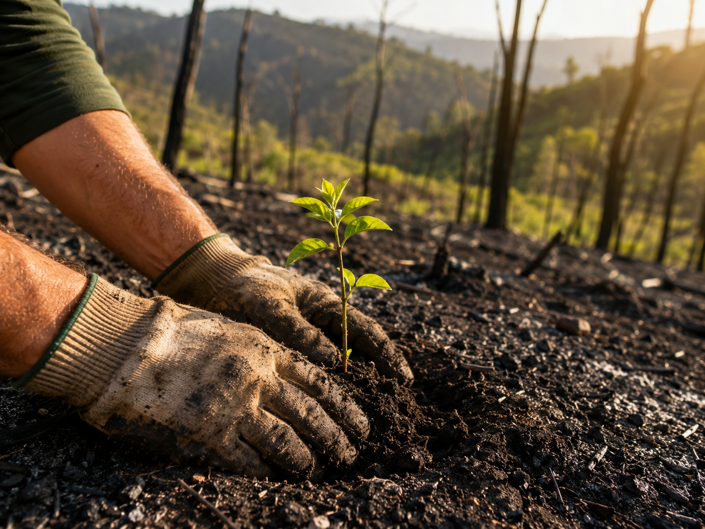

Keep this question in mind. Today, your model will help you answer it with evidence.
Start here. Learn the words you will use today.
Picture a forest after a fire. Some trees are gone. New plants are starting to grow. Animals may return, but not all at once.
Before you read more, think about what might change first.
There are no wrong observations. Scientists always start by looking carefully and asking questions.
These words will help you explain your ecosystem model. Tap each card to flip it and read the definition.
Copy this sentence carefully into your science notebook:
"When an ecosystem changes, some organisms survive, some move, and some may not make it."
Now learn the main science idea.

An ecosystemEcosystemA place where living and nonliving things interact. includes living things and nonliving things. Plants, animals, water, soil, rocks, and sunlight all matter.
An ecosystem is in balanceBalanceWhen parts of a system work together well. when organisms can get what they need — food, water, shelter, and space.
Ecosystems can change because of drought, flood, fire, pollution, or habitat lossHabitat LossWhen organisms lose the place they need to live..
Some animals may move away. Some plants may die. Other plants may grow back first.

People can design solutionsSolutionA way to help solve a problem. to help ecosystems. They might plant native plants, clean water, or protect habitats.
Real-World Connection: After wildfires in national parks, scientists plant native trees and grasses to help the soil recover faster.

When an ecosystem changes, organisms may be affected in many ways. A good solution helps plants and animals meet their needs again.
Curious? Go Deeper
Some ecosystems actually depend on fire. In certain forests, small fires clear out dead wood and help new plants get sunlight. Without those fires, the forest floor gets too crowded.
Scientists call this a fire-adapted ecosystem. The plants and animals there have been living with fire for thousands of years. Some seeds only sprout after they've been heated!
Now test the idea yourself.
You'll need: Science notebook, pencil, colored pencils, and small tokens (coins, buttons, or paper squares).
Follow each step carefully. Record your observations in your science notebook as you go.
Build your ecosystem. Draw a forest, pond, desert, grassland, or ocean in your notebook. Add at least 3 organisms and 2 nonliving parts (water, soil, sunlight, rocks).
Add resource tokens. Place tokens on the things organisms need: food, water, shelter, and space. Each organism should have at least 2 tokens nearby.
Simulate a change. Remove or move tokens to show what happens after a fire, flood, or drought. Write down which organisms lost resources.
Try one solution. Add tokens back or rearrange them to show a solution. Decide whether it helps at least 2 organisms meet their needs again.
Think about what you found.
Tell the story of your investigation from beginning to end — what you did, what you noticed, and what you figured out.
Think through each question on your own. Talk it through with someone or think about it in your mind.
Check what you understand.
Show what you learned.
🔍 Part A — Identify the Parts
Look at your ecosystem model. Answer each question.
🚀 Part B — Short Answer
Answer each question in complete sentences. Use your science vocabulary!
Think about the ecosystem you modeled today. Would your solution really help? Use evidence from your simulation.
What do you think?
💡 Start with: "I think my solution helped because…"
What did you observe that supports your thinking?
💡 Start with: "I know this because when I moved the tokens…"
Why does that make sense?
💡 Start with: "This makes sense because…"
📚 Try to use at least one of these words: ecosystem, balance, solution
🎨 Part C — Draw & Label
Draw a before-and-after diagram of your ecosystem. Label at least 4 parts. Show what changed and your solution.
Submit your work on Canvas using one of these options:
Make sure your submission includes all of these: